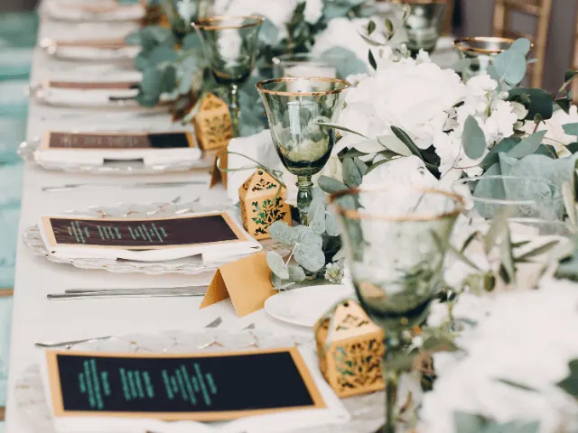

Partnerbijdrage
De ultieme bruiloft checklist
Gepubliceerd op 31 maart 2023, bijgewerkt op 26 februari 2024
Onderdeel van de gids Trouwen in Nijmegen

Niet schrikken, maar er komt een heleboel kijken wanneer je de dag van je leven gaat voorbereiden. Het plannen van deze dag kan simpel gezegd overweldigend zijn. Daarom hebben wij de ultieme checklist voor je samengesteld. Zo hoef je alleen maar vinkjes te zetten en wie weet krijg je nog hulp van vriend(innen) en je toekomstige partner uiteraard, en merk je dat het ook heel leuk is om alles voor te bereiden. Hier komt de lijst:
Budget
Begin met het bepalen van je budget voor de bruiloft. Bepaal hoeveel je wilt uitgeven en verdeel dit bedrag over de verschillende onderdelen van de bruiloft, zoals de locatie, de catering, de bloemen en de kleding.
Gastenlijst
Maak een gastenlijst en bepaal het aantal gasten dat je wilt uitnodigen. Houd er rekening mee dat de grootte van je gastenlijst van invloed kan zijn op de keuze van de locatie.
Datum en locatie
Bepaal de datum en de locatie van je bruiloft. Er zijn veel mooie locaties in Nijmegen, zoals de Mariënburgkapel, het Landgoed Brakkesteyn, en het Stadhuis Nijmegen. Reserveer de locatie zo snel mogelijk, omdat populaire locaties snel volgeboekt zijn.
Ceremonie
Bepaal het soort ceremonie dat je wilt, bijvoorbeeld een religieuze of een burgerlijke ceremonie. Regel eventueel een trouwambtenaar of dominee.
Trouwjurk en -pak
Begin op tijd met het uitzoeken van een trouwjurk en -pak. In Nijmegen zijn verschillende bruidswinkels en herenmodezaken waar je terecht kunt voor het uitzoeken van de perfecte outfit.
Fotograaf en videograaf
Huur een fotograaf en videograaf in om de mooiste momenten van je bruiloft vast te leggen. In Nijmegen zijn veel getalenteerde fotografen en videografen te vinden, dus je kunt kiezen uit een breed aanbod.
Catering
Bepaal wat voor catering je wilt hebben op je bruiloft, bijvoorbeeld een buffet of een diner. In Nijmegen zijn veel cateringbedrijven die gespecialiseerd zijn in bruiloften en die je kunnen helpen bij het samenstellen van een menu.
Bloemen en decoratie
Bepaal welke bloemen en decoraties je wilt gebruiken op je bruiloft. In Nijmegen zijn er veel bloemisten die gespecialiseerd zijn in bruidsbloemwerk en je kunnen helpen bij het maken van de juiste keuzes.

Muziek
Bepaal welke muziek je wilt op je bruiloft, bijvoorbeeld een band of een DJ. Er zijn veel muzikanten en DJ’s in Nijmegen die je kunt inhuren om de muziek op je bruiloft te verzorgen.
Uitnodigingen
Ontwerp en verstuur de uitnodigingen voor je bruiloft. Vergeet niet om de RSVP datum te vermelden, zodat je op tijd weet hoeveel gasten er zullen komen.
Bruidstaart
Bestel een bruidstaart die past bij je stijl en smaak. Er zijn veel bakkerijen in Nijmegen die gespecialiseerd zijn in het maken van bruidstaarten. En je mag lekker komen voorproeven.
Vervoer
Regel het vervoer van en naar de locatie van je bruiloft. In Nijmegen zijn er verschillende mogelijkheden, zoals een limousine, een klassieke auto of een koets.
Haar en make-up
Laat je haar en make-up verzorgen door een professional. Er zijn veel kappers en visagisten in Nijmegen die ervaring hebben met bruidskapsels en bruidsmake-up.
Trouwringen
Kies de perfecte trouwringen uit. Er zijn veel juweliers in Nijmegen die een breed scala aan trouwringen aanbieden.
Overnachting
Regel een overnachting voor na de bruiloft. Er zijn veel hotels en B&B’s in Nijmegen waar je kunt overnachten.
Gastenlijst en zitplaatsen
Maak een zitplaatsindeling voor je gasten en zorg ervoor dat iedereen een plaats heeft. Houd rekening met eventuele dieetwensen van je gasten.
Kinderopvang
Regel kinderopvang als er kinderen aanwezig zijn op de bruiloft. Er zijn verschillende kinderopvangcentra in Nijmegen die deze service aanbieden.
Huwelijksreis
Boek een huwelijksreis om samen te genieten van je eerste dagen als getrouwd stel. Er zijn veel reisbureaus in Nijmegen die je kunnen helpen bij het samenstellen van de perfecte huwelijksreis.
Bedankjes
Verzamel bedankjes voor je gasten om ze te bedanken voor hun aanwezigheid op je bruiloft. Er zijn veel winkels in Nijmegen die gespecialiseerd zijn in bruiloft bedankjes.
Proefkapsel en -make-up
Plan een proefkapsel en -make-upsessie om ervoor te zorgen dat je er op je best uitziet op je bruiloft. Er zijn veel kappers en visagisten in Nijmegen die deze service aanbieden.
Met deze checklist ben je goed voorbereid op je bruiloft in Nijmegen. Gebruik deze bruiloft checklist om punt voor punt af te strepen. Vergeet overigens niet om op tijd te beginnen met plannen en geniet van deze bijzondere dag!